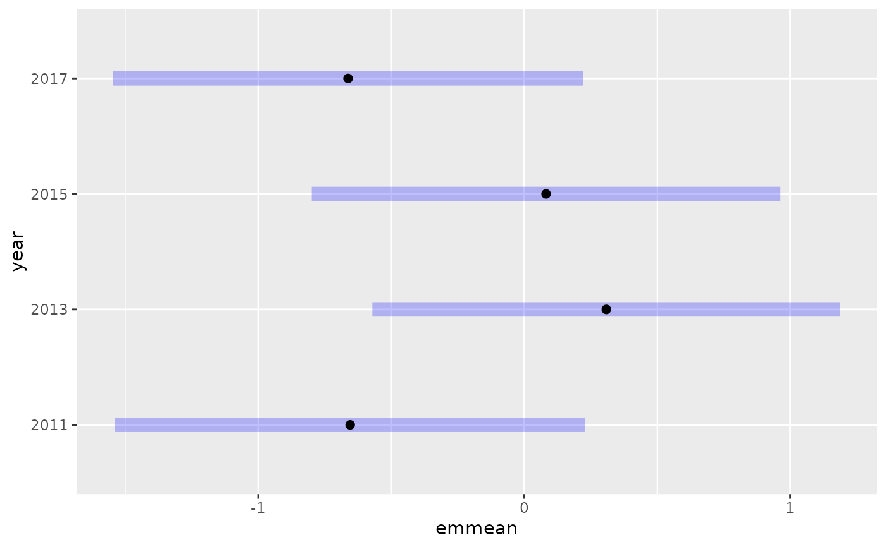
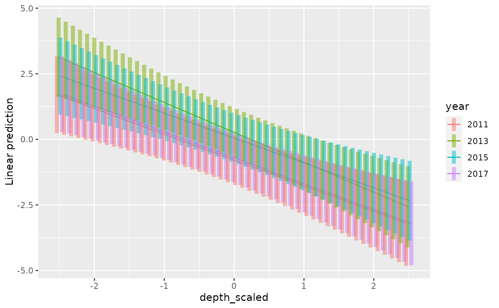

Methods for using the emmeans package with sdmTMB. The emmeans package computes estimated marginal means for the fixed effects.
Examples
mesh <- make_mesh(pcod_2011, c("X", "Y"), cutoff = 20)
fit <- sdmTMB(
present ~ as.factor(year),
data = pcod_2011, mesh = mesh,
family = binomial()
)
fit
#> Spatial model fit by ML ['sdmTMB']
#> Formula: present ~ as.factor(year)
#> Mesh: mesh (isotropic covariance)
#> Data: pcod_2011
#> Family: binomial(link = 'logit')
#>
#> coef.est coef.se
#> (Intercept) -0.65 0.45
#> as.factor(year)2013 0.96 0.22
#> as.factor(year)2015 0.74 0.22
#> as.factor(year)2017 -0.01 0.22
#>
#> Matérn range: 32.79
#> Spatial SD: 2.15
#> ML criterion at convergence: 563.973
#>
#> See ?tidy.sdmTMB to extract these values as a data frame.
emmeans::emmeans(fit, ~ year)
#> year emmean SE df lower.CL upper.CL
#> 2011 -0.6545 0.450 963 -1.538 0.229
#> 2013 0.3089 0.448 963 -0.571 1.189
#> 2015 0.0823 0.449 963 -0.799 0.963
#> 2017 -0.6624 0.450 963 -1.546 0.221
#>
#> Results are given on the logit (not the response) scale.
#> Confidence level used: 0.95
emmeans::emmeans(fit, pairwise ~ year)
#> $emmeans
#> year emmean SE df lower.CL upper.CL
#> 2011 -0.6545 0.450 963 -1.538 0.229
#> 2013 0.3089 0.448 963 -0.571 1.189
#> 2015 0.0823 0.449 963 -0.799 0.963
#> 2017 -0.6624 0.450 963 -1.546 0.221
#>
#> Results are given on the logit (not the response) scale.
#> Confidence level used: 0.95
#>
#> $contrasts
#> contrast estimate SE df t.ratio p.value
#> year2011 - year2013 -0.96336 0.222 963 -4.343 0.0001
#> year2011 - year2015 -0.73681 0.221 963 -3.339 0.0048
#> year2011 - year2017 0.00789 0.221 963 0.036 1.0000
#> year2013 - year2015 0.22655 0.218 963 1.041 0.7252
#> year2013 - year2017 0.97125 0.223 963 4.351 0.0001
#> year2015 - year2017 0.74471 0.223 963 3.342 0.0048
#>
#> Results are given on the log odds ratio (not the response) scale.
#> P value adjustment: tukey method for comparing a family of 4 estimates
#>
emmeans::emmeans(fit, pairwise ~ year, type = "response")
#> $emmeans
#> year prob SE df lower.CL upper.CL
#> 2011 0.342 0.101 963 0.177 0.557
#> 2013 0.577 0.109 963 0.361 0.767
#> 2015 0.521 0.112 963 0.310 0.724
#> 2017 0.340 0.101 963 0.176 0.555
#>
#> Confidence level used: 0.95
#> Intervals are back-transformed from the logit scale
#>
#> $contrasts
#> contrast odds.ratio SE df null t.ratio p.value
#> year2011 / year2013 0.382 0.0847 963 1 -4.343 0.0001
#> year2011 / year2015 0.479 0.1056 963 1 -3.339 0.0048
#> year2011 / year2017 1.008 0.2228 963 1 0.036 1.0000
#> year2013 / year2015 1.254 0.2729 963 1 1.041 0.7252
#> year2013 / year2017 2.641 0.5896 963 1 4.351 0.0001
#> year2015 / year2017 2.106 0.4692 963 1 3.342 0.0048
#>
#> P value adjustment: tukey method for comparing a family of 4 estimates
#> Tests are performed on the log odds ratio scale
#>
emmeans::emmeans(fit, pairwise ~ year, adjust = "none")
#> $emmeans
#> year emmean SE df lower.CL upper.CL
#> 2011 -0.6545 0.450 963 -1.538 0.229
#> 2013 0.3089 0.448 963 -0.571 1.189
#> 2015 0.0823 0.449 963 -0.799 0.963
#> 2017 -0.6624 0.450 963 -1.546 0.221
#>
#> Results are given on the logit (not the response) scale.
#> Confidence level used: 0.95
#>
#> $contrasts
#> contrast estimate SE df t.ratio p.value
#> year2011 - year2013 -0.96336 0.222 963 -4.343 <.0001
#> year2011 - year2015 -0.73681 0.221 963 -3.339 0.0009
#> year2011 - year2017 0.00789 0.221 963 0.036 0.9715
#> year2013 - year2015 0.22655 0.218 963 1.041 0.2980
#> year2013 - year2017 0.97125 0.223 963 4.351 <.0001
#> year2015 - year2017 0.74471 0.223 963 3.342 0.0009
#>
#> Results are given on the log odds ratio (not the response) scale.
#>
e <- emmeans::emmeans(fit, ~ year)
plot(e)

e <- emmeans::emmeans(fit, pairwise ~ year)
confint(e)
#> $emmeans
#> year emmean SE df lower.CL upper.CL
#> 2011 -0.6545 0.450 963 -1.538 0.229
#> 2013 0.3089 0.448 963 -0.571 1.189
#> 2015 0.0823 0.449 963 -0.799 0.963
#> 2017 -0.6624 0.450 963 -1.546 0.221
#>
#> Results are given on the logit (not the response) scale.
#> Confidence level used: 0.95
#>
#> $contrasts
#> contrast estimate SE df lower.CL upper.CL
#> year2011 - year2013 -0.96336 0.222 963 -1.534 -0.392
#> year2011 - year2015 -0.73681 0.221 963 -1.305 -0.169
#> year2011 - year2017 0.00789 0.221 963 -0.561 0.577
#> year2013 - year2015 0.22655 0.218 963 -0.333 0.786
#> year2013 - year2017 0.97125 0.223 963 0.397 1.546
#> year2015 - year2017 0.74471 0.223 963 0.171 1.318
#>
#> Results are given on the log odds ratio (not the response) scale.
#> Confidence level used: 0.95
#> Conf-level adjustment: tukey method for comparing a family of 4 estimates
#>
summary(e, infer = TRUE)
#> $emmeans
#> year emmean SE df lower.CL upper.CL t.ratio p.value
#> 2011 -0.6545 0.450 963 -1.538 0.229 -1.453 0.1465
#> 2013 0.3089 0.448 963 -0.571 1.189 0.689 0.4910
#> 2015 0.0823 0.449 963 -0.799 0.963 0.183 0.8545
#> 2017 -0.6624 0.450 963 -1.546 0.221 -1.471 0.1416
#>
#> Results are given on the logit (not the response) scale.
#> Confidence level used: 0.95
#>
#> $contrasts
#> contrast estimate SE df lower.CL upper.CL t.ratio p.value
#> year2011 - year2013 -0.96336 0.222 963 -1.534 -0.392 -4.343 0.0001
#> year2011 - year2015 -0.73681 0.221 963 -1.305 -0.169 -3.339 0.0048
#> year2011 - year2017 0.00789 0.221 963 -0.561 0.577 0.036 1.0000
#> year2013 - year2015 0.22655 0.218 963 -0.333 0.786 1.041 0.7252
#> year2013 - year2017 0.97125 0.223 963 0.397 1.546 4.351 0.0001
#> year2015 - year2017 0.74471 0.223 963 0.171 1.318 3.342 0.0048
#>
#> Results are given on the log odds ratio (not the response) scale.
#> Confidence level used: 0.95
#> Conf-level adjustment: tukey method for comparing a family of 4 estimates
#> P value adjustment: tukey method for comparing a family of 4 estimates
#>
as.data.frame(e)
#> Warning: Note: 'as.data.frame' has combined your 2 sets of results into one object,
#> and this affects things like adjusted P values. Refer to the annotations.
#> year contrast emmean SE df lower.CL upper.CL
#> 2011 . -0.6544649 0.4504063 963 -1.9216912 0.6127615
#> 2013 . 0.3088961 0.4483570 963 -0.9525645 1.5703567
#> 2015 . 0.0823497 0.4489779 963 -1.1808579 1.3455572
#> 2017 . -0.6623585 0.4502686 963 -1.9291975 0.6044804
#> . year2011 - year2013 -0.9633610 0.2218448 963 -1.5875254 -0.3391966
#> . year2011 - year2015 -0.7368146 0.2206838 963 -1.3577125 -0.1159166
#> . year2011 - year2017 0.0078936 0.2210489 963 -0.6140314 0.6298187
#> . year2013 - year2015 0.2265465 0.2175601 963 -0.3855629 0.8386559
#> . year2013 - year2017 0.9712547 0.2232425 963 0.3431579 1.5993514
#> . year2015 - year2017 0.7447082 0.2228064 963 0.1178382 1.3715782
#>
#> Results are given on the logit (not the response) scale.
#> Confidence level used: 0.95
#> Conf-level adjustment: bonferroni method for 10 estimates
# interaction of factor with continuous predictor:
fit2 <- sdmTMB(
present ~ depth_scaled * as.factor(year),
data = pcod_2011, mesh = mesh,
family = binomial()
)
fit2
#> Spatial model fit by ML ['sdmTMB']
#> Formula: present ~ depth_scaled * as.factor(year)
#> Mesh: mesh (isotropic covariance)
#> Data: pcod_2011
#> Family: binomial(link = 'logit')
#>
#> coef.est coef.se
#> (Intercept) -0.82 0.46
#> depth_scaled -1.01 0.25
#> as.factor(year)2013 1.02 0.23
#> as.factor(year)2015 0.78 0.23
#> as.factor(year)2017 0.00 0.23
#> depth_scaled:as.factor(year)2013 -0.17 0.26
#> depth_scaled:as.factor(year)2015 0.02 0.27
#> depth_scaled:as.factor(year)2017 -0.01 0.26
#>
#> Matérn range: 28.74
#> Spatial SD: 2.45
#> ML criterion at convergence: 543.180
#>
#> See ?tidy.sdmTMB to extract these values as a data frame.
# slopes for each level:
emmeans::emtrends(fit2, ~ year, var = "depth_scaled")
#> year depth_scaled.trend SE df lower.CL upper.CL
#> 2011 -1.009 0.250 959 -1.50 -0.520
#> 2013 -1.181 0.245 959 -1.66 -0.700
#> 2015 -0.989 0.237 959 -1.45 -0.524
#> 2017 -1.021 0.242 959 -1.50 -0.545
#>
#> Confidence level used: 0.95
# test difference in slopes:
emmeans::emtrends(fit2, pairwise ~ year, var = "depth_scaled")
#> $emtrends
#> year depth_scaled.trend SE df lower.CL upper.CL
#> 2011 -1.009 0.250 959 -1.50 -0.520
#> 2013 -1.181 0.245 959 -1.66 -0.700
#> 2015 -0.989 0.237 959 -1.45 -0.524
#> 2017 -1.021 0.242 959 -1.50 -0.545
#>
#> Confidence level used: 0.95
#>
#> $contrasts
#> contrast estimate SE df t.ratio p.value
#> year2011 - year2013 0.1721 0.263 959 0.653 0.9144
#> year2011 - year2015 -0.0207 0.266 959 -0.078 0.9998
#> year2011 - year2017 0.0113 0.263 959 0.043 1.0000
#> year2013 - year2015 -0.1928 0.260 959 -0.741 0.8806
#> year2013 - year2017 -0.1607 0.261 959 -0.615 0.9272
#> year2015 - year2017 0.0321 0.266 959 0.121 0.9994
#>
#> P value adjustment: tukey method for comparing a family of 4 estimates
#>
emmeans::emmip(fit2, year ~ depth_scaled,
at = list(depth_scaled = seq(-2.5, 2.5, length.out = 50)), CIs = TRUE)
